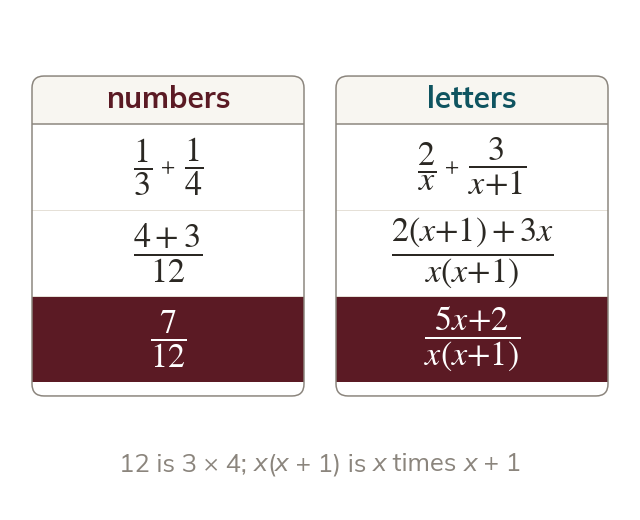

The same rule, with brackets
Fractions combine only over a common denominator. Two denominators with no common factor multiply to give it.
Fractions add or subtract only over a common denominator, whatever the denominators are made of. When two algebraic denominators share no factor, their product is the common denominator, just as is for thirds and quarters.